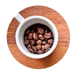

O café que chega até você


Escolha o seu café
Hoje em dia, café bom não é só aquele feito no coador de pano que nossas avós faziam, um novo mundo se abre para nós em matéria de tipos de grãos, tipos de torras e jeitos de preparar a bebida, que é tão popular na mesa dos brasileiros.